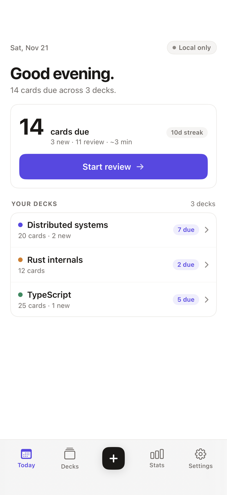

Any agent, zero plumbing
Works directly with Claude Code, Codex, pi, Cursor, Amp, or shell scripts over a plain CLI — no MCP server, no API key lock-in, and works even while the desktop app is closed.
Desktop · Terminal · iPhone · Agent CLI
Pair your coding and research agents with a calm, local-first memory system. The
rem CLI and skill turn real work into concise, source-grounded drafts —
you approve what sticks, review Markdown, Cloze, LaTeX, and Image Occlusion cards with
FSRS-7, and sync in real time across desktop, terminal, and iPhone.


A deliberate capture loop
Whether you are debugging a codebase, reading a paper, or learning a new language, generated content never becomes a scheduled card by accident. Every prompt passes through a clean, inspectable loop.
Debug code, read docs, or research a topic in Claude Code, Codex, pi, Cursor, or any terminal agent.
rem-card-capture checks existing cards and drafts, then dry-runs at most
3 atomic drafts grounded in exact files, lines, or URLs.
Test yourself front-first in Desktop Drafts or the rem draft review TUI,
and accept what belongs — rationale and sources stay attached during review.
FSRS-7 schedules accepted cards identically across Desktop, iPhone, and lightweight
rem study sessions — synced in real time via Cloud Sync.
Agent Skill + CLI
Most flashcard workflows fail at capture time — copying context into another app
breaks flow, while unguided LLMs produce bloated cards you dread reviewing. Pairing
the bundled rem CLI with the installable
rem-card-capture skill turns any CLI-capable agent into a disciplined
spaced-repetition collaborator.
Works directly with Claude Code, Codex, pi, Cursor, Amp, or shell scripts over a plain CLI — no MCP server, no API key lock-in, and works even while the desktop app is closed.
rem-card-capture enforces the 3-month / 5-second test,
caps batches at 3 atomic recall targets (zero is valid), prefers mechanism,
contrast, and diagnosis prompts over essays or yes/no trivia, and keeps Markdown
clean for desktop, iPhone, and terminal.
Agents resolve exact deck IDs, search existing cards via
rem card search and pending drafts via
rem draft list, validate every batch with --dry-run
and --output json, and get retry-safe
duplicateCard / duplicateDraft no-ops.
Proposals land in the local-only Drafts inbox — triage them on
Desktop or in the shell with rem draft review (front-first TUI with
$EDITOR handoff). Accepted cards retain their rationale and source
locators during review; rem card add and rem sync stay
ready for scripts.
“We just fixed that stale-grade race condition — capture what’s worth remembering in my Rust internals deck.”
# 1. Skill resolves target deck and validates batch with --dry-run
$ rem deck list --output json
$ rem draft add --deck rust-internals --producer claude-code \
--input-json - --dry-run --output json <<'JSON'
[{
"front": "In rem, how does optimistic concurrency prevent desktop and terminal sessions from grading the same stale card twice?",
"back": "Each study item carries local_revision; committing succeeds only if it still matches, else returns a conflict without logging.",
"tags": ["rust", "concurrency"],
"rationale": "Core invariant across shared SQLite surfaces.",
"sources": [{ "locator": "src-tauri/crates/rem-core/src/study.rs:142-168" }]
}]
JSON
# 2. Dry-run passes → submits identical payload without --dry-run
{ "version": 1, "command": "draft.add", "data": { "drafts": [{ "status": "created" }] } }rem draft review — provenance stays on the card
“Distill the key sync invariants from this design doc into rem drafts. Skip anything already in my deck or inbox.”
# 1. Searches existing cards (FTS5) and pending drafts to avoid near-duplicates
$ rem card search "sync invariant" --output json
$ rem draft list --output json
# 2. Picks ≤3 high-recall contrast/why prompts (rejects trivia & list dumps)
$ rem draft add --deck distributed-systems --producer codex \
--input-json - --output json <<'JSON'
[
{
"front": "Why don't pending rem drafts sync to Cloud or appear in backups?",
"back": "Drafts are unapproved local operational state without scheduling data; a card enters sync only after human acceptance.",
"sources": [{ "locator": "docs/cli.md#L77-L80" }]
}
]
JSON
{ "version": 1, "command": "draft.add", "data": { "drafts": [{ "status": "created" }] } }
# 3. Triage front-first in your terminal (with $EDITOR handoff)
$ rem draft review --deck distributed-systemsBypass drafts when you want immediate scheduling, import Anki decks, review Markdown cards in your shell, and sync in real time to Desktop and iPhone.
# Direct scheduled capture for humans & explicitly trusted scripts
$ rem card add --deck Systems --input-json notes.json --dry-run --output json
$ rem card add --deck Systems --input-json notes.json --output json
# Import Anki .apkg (Cloze, Image Occlusion, LaTeX, audio & FSRS-7 history)
$ rem import anatomy.apkg --dry-run
$ rem import anatomy.apkg
# Lightweight terminal text/Markdown review (Desktop & iOS for visual media)
$ rem study --deck Systems
# Fast snapshot bootstrap & incremental sync via Keychain or REM_SYNC_TOKEN
$ rem sync status
$ rem syncDesktop + iPhone + Terminal
Built to remain yours
Your decks, cards, media assets, and complete review history live on your device in SQLite — no account or cloud service required, with portable JSON export and import.
Author rectangle and ellipse masks in the desktop SVG canvas editor (or on iPhone)
with Hide All / Hide One grouping, interactive reveal &
spoiler-safe zoom on Desktop and iOS, plus Anki 23.10+ and Image Occlusion Enhanced
.apkg import.
Search front, back, tags, and rationale across every deck in milliseconds via
trigger-maintained SQLite FTS5 (with substring fallback for code operators) using
⌘K on desktop, Decks search on iPhone, or rem card search.
Modern FSRS-7 scheduling in Rust with Anki-aligned steps, configurable retention, sibling burying, Custom Study modes, and per-deck weight optimization across desktop and iPhone.
rem-card-capture and the versioned JSON CLI propose ≤3 atomic drafts;
triage them on Desktop or in the rem draft review TUI with
$EDITOR handoff, keeping source provenance visible during review.
Import Anki .apkg decks on desktop, CLI, or iPhone with
revlog replayed into FSRS-7. Write cloze deletions with sibling burying,
LaTeX math, inline audio clips, nested :: subdecks, and highlighted code.
SwiftUI iPhone app backed by the same Rust core via UniFFI — direct .apkg
import on iPhone, Image Occlusion, native LaTeX math, audio playback, nested
:: subdecks, Custom Study, global search, Swift Charts stats, and
reminders.
Real-time WebSocket pokes, fast compacted snapshot bootstrap for new devices, and 500 MB R2 media for images, occlusion diagrams, and audio via rem Premium (30-day free trial, $5/year) — or self-host the Apache-2.0 Worker free.
rem study gives you fast terminal review for text and Markdown cards over
the shared Rust StudySession — with undo, suspend, and provenance — while
Desktop and iPhone handle rich media, Image Occlusion, and LaTeX.
Start remembering
Install the desktop app and bundled rem CLI together on macOS or Linux,
add the rem-card-capture skill for your local agents, download Windows
packages from Releases, or build the SwiftUI iPhone companion locally with Xcode 16+
(TestFlight builds are published automatically on releases).
$ brew install --cask shettyh/tap/rem
$ curl -fsSL https://raw.githubusercontent.com/shettyh/rem/main/install.sh | sh
$ npx skills add shettyh/rem --skill rem-card-capture --global
$ bash tools/build-ios-xcframework.sh --debug && open ios/Rem.xcodeproj
macOS releases are signed, notarized, bundle the rem CLI, and include
in-app auto-updates. Windows installers are available from Releases (unsigned). Local
iPhone builds require Xcode 16+ (iOS 17+ SDK) and
rustup target add aarch64-apple-ios aarch64-apple-ios-sim (pass
--sim-only for faster Simulator builds). See
code signing,
CLI docs, and the
iOS build guide.

Build durable understanding